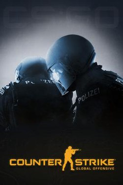

Counter-Strike: Global Offensive (CS: GO; укр. Контрудар: Глобальний Наступ) — відеогра, шутер від першої особи, розроблена компаніями Valve і Hidden Path Entertainment; остання основна гра в серії ігор Counter-Strike. Випуск гри для персональних комп'ютерів на операційних системах Windows та macOS, також ігрових приставок Xbox 360 та PlayStation 3 відбувся 21 серпня 2012 року. Версія гри для Linux була випущена в 2014 році[1], а в 2016 році гра, в рамках програми зворотної сумісності, стала доступна на Xbox One[2]. У вересні 2018 року була випущена безкоштовна версія з можливістю гри з реальними гравцями та з ботами. Пізніше, у грудні того ж року гра стала повністю безкоштовною, зосередившись на доходах від косметичних товарів. У вересні 2023, гра застаріла з виходом Counter Strike 2, і була видалена зі Steam. Після цього у CS:GO можна грати тільки з ботами за допомогою ввімкнення бета-версії в контекстному меню Counter-Strike 2 у бібліотеці Steam[3]. У грі є дві команди, терористи та спецвійська (контртерористи), одна проти одної в різних режимах гри на основі цілей. Найпоширеніші режими гри включають те, що терористи закладають бомбу, тоді як контртерористи намагаються їх деактивувати, або контртерористи намагаються врятувати заручників, захоплених терористами. Існує дев'ять офіційних режимів гри, кожен з яких має відмінні характеристики, характерні для цього режиму. У грі також є підтримка підбору партнерів, яка дозволяє гравцям грати на виділених серверах Valve, на додаток до серверів, розміщених у спільноті, із користувацькими картами та режимами гри. У грудні 2018 року був представлений режим «королівської битви», «Небезпечна зона». Після випуску Global Offensive отримала позитивні відгуки від критиків, які похвалили гру за її ігровий процес і вірність серії Counter-Strike, хоча її критикували за деякі ранні функції та відмінності між версіями для консолі та ПК. З моменту свого випуску вона залучала приблизно 11 мільйонів гравців на місяць і залишалася однією з найпопулярніших ігор на платформі Steam від Valve. У грі була активна кіберспортивна сцена, що продовжувала історію міжнародних змагань з попередніх ігор серії. Команди змагалися в професійних лігах та турнірах, а Global Offensive була однією із найбільших світових кіберспортивних дисциплін.
Загальний ігровий процес Global Offensive подібний до попередніх ігор серії Counter-Strike. Global Offensive є мультиплеєрним шутером від першої особи, де кожен гравець приєднується до команди терористів або спецвійськ (контртерористів), щоб перемогти ворожу команду. В кожній команді є по 5 бійців. Гра триває впродовж кількох раундів, які закінчуються, коли всі бійці на одній стороні мертві або виконано поставлену ціль. На початку кожного раунду команди з'являються у себе на «базах». Бійці володіють запасом здоров'я, початковою зброєю і коштами. Навколо баз існує «зона покупок», в межах якої впродовж обмеженого часу можливо придбати додаткову зброю та спорядження. Користуючись зброєю, укриттями, знанням місцевості (карти) та командною співпрацею, гравці намагаються виконати завдання, що залежить від обраного заздалегідь режиму. Здійснюючи успішні дії, бійці отримують кошти, а після завершення раунду отримують додаткову винагороду — більшу в разі перемоги та меншу в разі поразки. В той же час кошти знімаються за вбивство товаришів по команді або заручників терористів. Гравці, чий персонаж був убитий, можуть спостерігати за боєм до кінця раунду. В Counter-Strike: Global Offensive з'явився режим навчання. Він вчить основам ігрового процесу, як поводженню з гранатами, стрільбі через укриття чи перемиканню між зброєю.
Classic competitive (укр. Змагальний) — перед початком матчу обираються 10 гравців з приблизно однаковим рівнем майстерності, що поділяються на дві команди по 5 учасників. Для перемоги потрібно або знищити команду супротивника, або виконати особливе завдання (терористам — підірвати бомбу або утримати заручників, спецвійськам — знешкодити бомбу або врятувати заручників). Гру в змагальному режимі не можна залишати до її закінчення. Гра триває доти, поки одна з команд не здобуде 16 перемог. Після 15-го раунду команди міняються місцями.
Classic casual (укр. Спрощений) — те саме, але перемагає та команда, яка першою здобуде 8 перемог. При цьому дружній вогонь (по своїх) відключений. На відміну від змагального режиму, на початку кожного раунду дається додаткова броня та саперний набір. За вбивство в спрощеному режимі дається вдвічі менше коштів, ніж у змагальному.
Deathmatch (укр. Бій насмерть) — триває 10 хвилин, мета кожної команди — набрати якомога більше очок. Очки даються за вбивство або допомогу у вбивстві супротивника. Вбивство різною зброєю дає різну кількість очок. Боєць може скористатись лікувальною ін'єкцією, яку отримує за серію з 3-х убивств впродовж власного життя. Відродження після смерті відбувається моментально у випадковому місці на карті. Після відродження можна вільно купити будь-яку зброю, крім гранат. Раз на кілька хвилин одна зброя стає бонусною і за вбивство з неї гравець отримає більше очок. Дружній вогонь відключений.
War Games (укр. Військові ігри) — низка режимів з особливими умовами, заснована на модифікаціях оригінальної Counter-Strike:
Arms race (укр. Гонка озброєнь) — гравець повинен встигнути першим здійснити вбивство з кожного виду зброї (останньою мусить бути ніж). Щоб отримати нову зброю, потрібно вбити лідера ворожої команди або двох звичайних супротивників. При стрільбі лідер підсвічується і його видно крізь стіни та інші об'єкти. У цьому режимі дружній вогонь відключений, відродження після смерті відбувається миттєво.
Demolition (укр. Винищення) — гравці мають знищити команду супротивника, підірвати або знешкодити бомбу. Зброя видається автоматично за вбивства в кожному раунді. Дружній вогонь відключений. Гра триває 20 раундів, після 10-го команди міняються місцями. В цьому режимі можлива нічия.
The Flying Scoutsman (укр. Летючий розвідник) — аналогічний до спрощеного режиму, але гравці мають лише гвинтівку SSG 08 та ніж, а на картах послаблена сила тяжіння, що дозволяє надзвичайно високо й далеко стрибати. Danger Zone (укр. Небезпечна зона) — режим, аналогічний в основі до Player Unknown's Battleground. Гравець самотужки або в команді з 2-3 учасників намагається вижити на острові, для чого повинен знищувати противників, уникати пасток і бомбардувань. Якщо учасник загине, але його напарник живий, то він може повернутися в бій заново. В битві беруть участь 16-18 бійців, які висаджуються в різних місцях. Вони мають як звичайну зброю, так і холодну на кшталт сокир, і можуть битися голіруч; володіють 120-ма одиницями здоров'я замість стандартних 100. На старті учасники мають початкову зброю і спорядження, а додаткові можуть знайти в кейсах, розкиданих по місцевості, або доставлених дронами за знайдені гроші. Місцями трапляються заручники, доставка яких в зону евакуації дає додаткові кошти, або вказівки на знищення особливих цілей. Бійці володіють планшетами, звідки отримують інформацію про обстановку та здійснюють покупки. Вбивши персонажа противника, гравець може забрати його речі. Територія поділена на шестикутники, що періодично піддаються бомбардуванню, змушуючи учасників тікати з зайнятих позицій. Кожне наступне бомбардування охоплює більшу площу, і коли вичерпується 10 хвилин, цілком накриває острів.
Retakes (укр. Перехоплення) — грають команда спецвійськ з 4-х учасників проти команди терористів з 3-х учасників. Мета спецвійськ полягає в тому, щоб захопити місце закладання бомби та знешкодити її, а терористів — завадити цьому. На початку кожного раунду гравцям пропонується обрати спорядження з-поміж кількох варіантів. Якщо боєць гине, він втрачає спорядження, якщо ж виживає, воно покращується. Перемагає команда, що виграла 8 раундів з 15.
Крім того щотижня пропонуються змагання: «Другий пілот» (закладання/знешкодження бомби в командах 2 на 2), «Експерт зі зброї» (придбана на початку раунду зброя стає недоступна в наступних раундах до кінця матчу) та «Військові ігри» (матчі з унікальними умовами, але по їх завершенню учасники голосують за наступні умови). Періодично відбуваються тематичні змагання, за участь і перемоги в яких учасники винагороджуються віртуальними пам'ятними значками чи оформленням зброї, спорядження й додатковими моделями бійців.